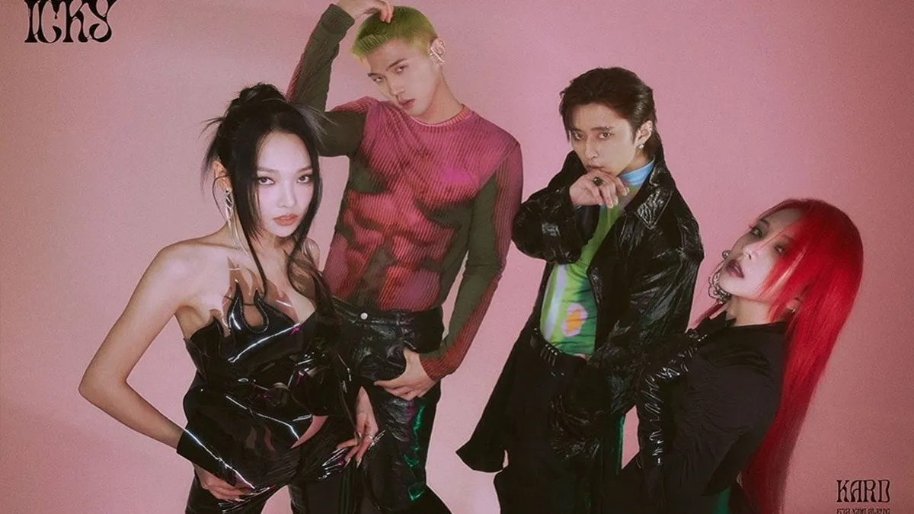
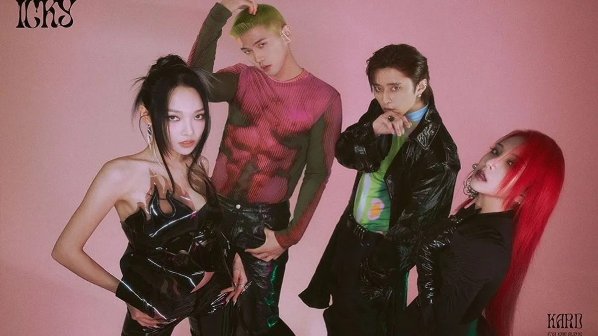
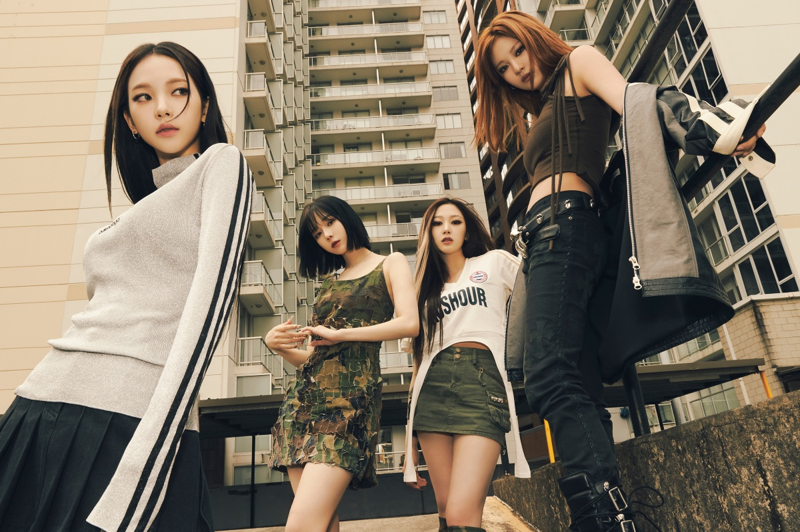
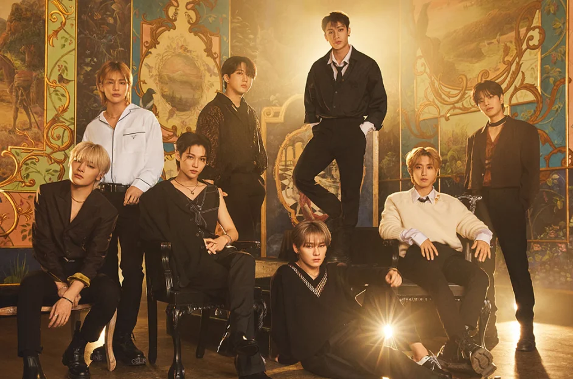

Kard
Es un grupo mixto surcoreano formado por la empresa DSP Media en 2016.Su nombre es un acrónimo de las palabras King, Ace, JokeR, HiDden que son cartas en una baraja, refiriéndose a que juntos forman un "grupo perfecto"
Es un grupo mixto surcoreano formado por la empresa DSP Media en 2016.Su nombre es un acrónimo de las palabras King, Ace, JokeR, HiDden que son cartas en una baraja, refiriéndose a que juntos forman un "grupo perfecto"
Bangtan Boys, es un grupo surcoreano formado en 2010. Está compuesto por siete integrantes: Jin, Suga, J-Hope, RM, Jimin, V y Jungkook. A pesar de haber sido creado con un estilo principalmente hip hop, ha llegado a incorporar una gran variedad de géneros en su repertorio musical.

Es un grupo musical femenino surcoreano bajo la discográfica Rainbow Bridge World. Está compuesto por cuatro integrantes Solar, Moonbyul, Wheein y Hwasa. El grupo debutó oficialmente el 19 de junio de 2014 con el mini álbum "Hello" y la canción "Mr. Ambiguous".

Es un nombre creado al combinar "æ" que significa: "Avatar X Experiencia" y la palabra inglesa "aspect" (aspecto), que significa doble cara. Basándose en la cosmovisión de conocer a un avatar y experimentar un mundo nuevo.
Grupo masculino surcoreano formado en 2017 por JYP Entertainment a través del reality show Stray Kids. El grupo está compuesto actualmente por ocho miembros: Bang Chan, Lee Know, Changbin, Hyunjin, Han, Felix, Seungmin y I.N.
